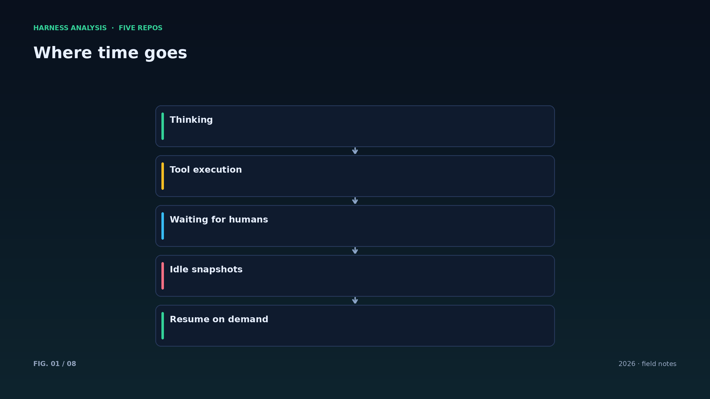
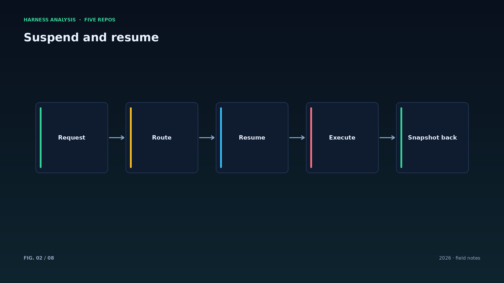
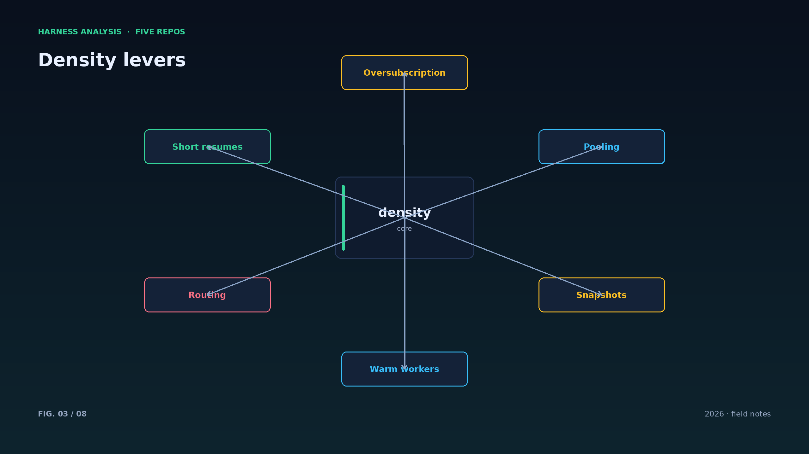
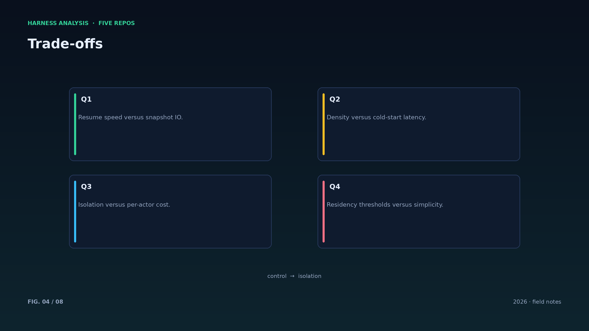
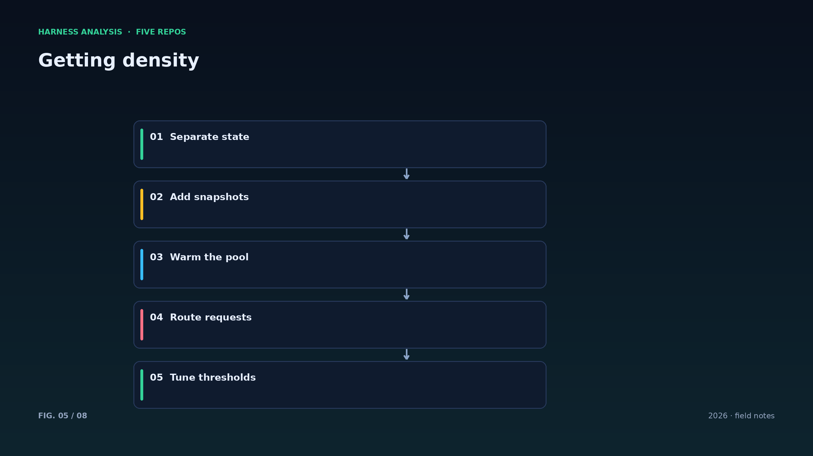
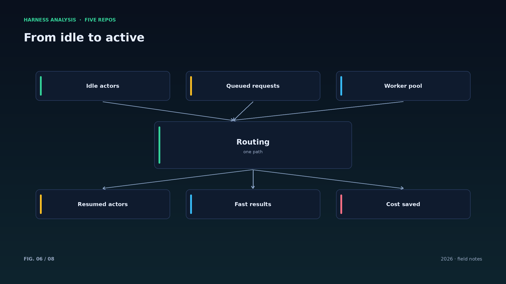
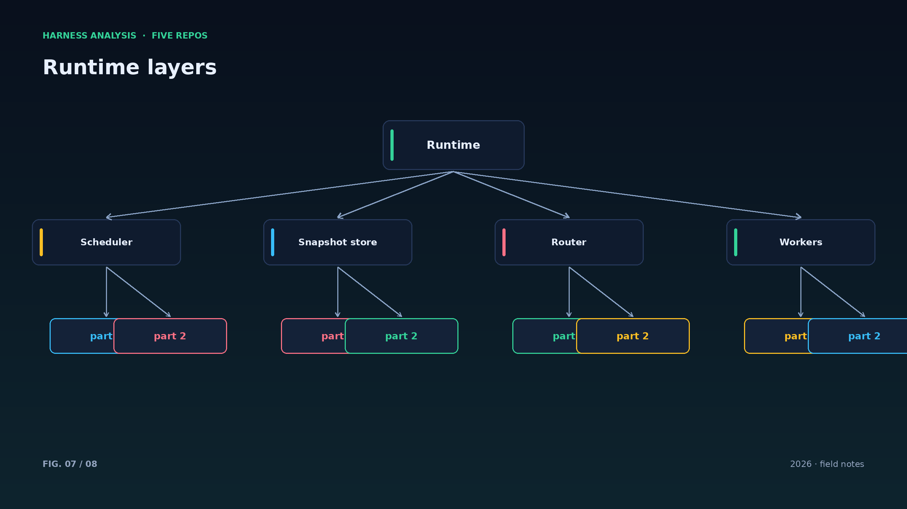
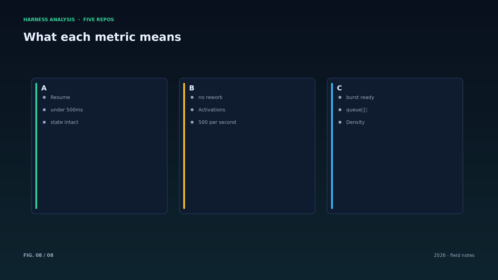

harness analysis · 10
性能与密度：Substrate 的 500 毫秒告诉了我们什么
Density and Performance: What Substrate's 500 Milliseconds Teach
agent 大部分时间在等待。Substrate 把“空闲即挂起、请求即恢复”做成了基础设施，这是密度提升一个数量级的根源。
一个 agent 的时间分布通常是：思考（模型调用）、工具执行、等待人类。前两者之外的空闲时间占比很高。Substrate 的判断是：不要为等待付费，把空闲 actor 快照出内存，请求到来再恢复。
这需要三项能力：快照（把内存与文件系统状态保存）、恢复（在任意 worker 上重建）、路由（把请求定向到恢复后的 actor）。Substrate 给出的数字是恢复小于 500 毫秒、每秒 500 次激活、10–30 倍超售。
对自建 harness 的启示不是“照抄快照”，而是“把状态与执行分离”：会话与检查点落在存储层，执行层可以在任意机器上重建。做到这一点，扩容与容错都会容易得多。
代价也要算清楚：快照有 IO 成本，恢复有冷启动开销，频繁挂起恢复会放大延迟。正确的策略是按任务价值决定驻留与挂起的阈值，而不是一刀切。
密度提升的前提是负载真的稀疏：如果 agent 一直满载，快照恢复只会增加开销。上线前先量时间分布，别拿别人的数字套自己的场景。
恢复的 SLO 要写进设计：P50 与 P99 的目标不同，池的预热策略、快照大小、存储带宽都要围绕目标做取舍。
快照与恢复要压测：用真实负载跑峰值、跑抖动，测出 P99 而不是只看平均值。
成本模型要透明：恢复、快照、存储、带宽各自的单价算清楚，密度收益才不会被隐藏成本吃掉。
最后，密度是手段不是目的：用户感知的是延迟与成功率，别为了漂亮的超售比牺牲体验。
Architecture figures








ENGLISH
Density and Performance: What Substrate's 500 Milliseconds Teach
Agents spend most of their lives waiting. Substrate turns idle-suspend and request-resume into infrastructure, and that is where an order-of-magnitude density gain comes from.
An agent's time splits into thinking (model calls), tool execution, and waiting for humans. Waiting dominates. Substrate's conclusion: do not pay for waiting — snapshot idle actors out of memory and resume them when a request arrives.
That requires three capabilities: snapshot (capture memory and filesystem state), resume (rebuild anywhere in the pool), and routing (direct requests to the resumed actor). Substrate reports resume under 500 milliseconds, 500 activations per second, and 10-30x oversubscription.
The lesson for a home-grown harness is not to copy snapshots but to separate state from execution: sessions and checkpoints live in storage, execution can be rebuilt on any machine. Do that and scaling and fault tolerance both get easier.
Count the costs too: snapshots cost IO, resume has cold-start overhead, and frequent suspend-resume inflates latency. The right policy sets residency thresholds by task value instead of applying one rule to everything.
Density gains assume sparse load: if agents are always busy, snapshotting only adds overhead. Measure the time distribution before copying someone else's numbers.
Load-test snapshots and resumes with real traffic, including jitter, and measure P99 instead of averages.
Keep the cost model transparent: price resume, snapshots, storage and bandwidth separately, or hidden costs eat the density gain. Density is a means; users feel latency and success rate.